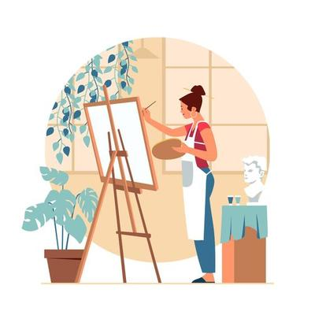

Hola, soy María José y en este blog hablare acerca de mi vida luego de
terminar el bachillerato.
Aunque aun no lo tengo claro, por el momento, la carrera que mas me llama
la atención es artes plasticas, ya que toda mi vida he estado muy
interesada por el arte. 
email